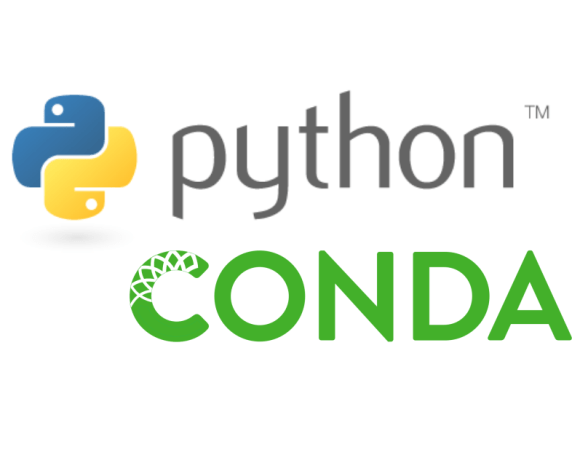
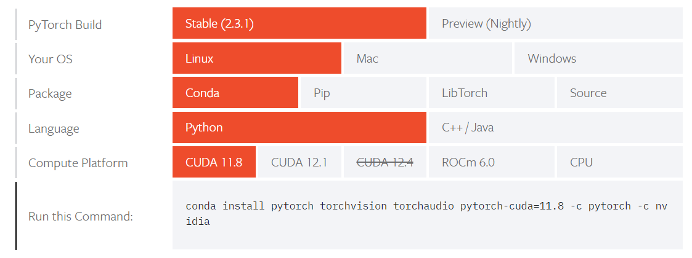

Setting up Conda Environment for ML Projects
This blogpost is written for myself as I keep forgetting the steps to set up a conda environment for my ML projects.
Install Conda
These four commands quickly and quietly install the latest 64-bit version of the installer and then clean up after themselves. To install a different version or architecture of Miniconda for Linux, change the name of the .sh installer in the wget command.
Visit the Miniconda website to find the latest version of Miniconda for Linux.

mkdir -p ~/miniconda3
wget https://repo.anaconda.com/miniconda/Miniconda3-latest-Linux-x86_64.sh -O ~/miniconda3/miniconda.sh
bash ~/miniconda3/miniconda.sh -b -u -p ~/miniconda3
rm -rf ~/miniconda3/miniconda.shAfter installing, initialize your newly-installed Miniconda. The following commands initialize for bash and zsh shells:
~/miniconda3/bin/conda init bash
~/miniconda3/bin/conda init zshyou can run conda -V to check if conda is installed correctly.
Creating Conda Environment
The below command will create the conda environment with the name EnvName and python version 3.9.
conda create --name EnvName python=3.9 jupyterTo activate the environment, run the below command:
conda activate EnvNameInstalling Pytorch
Visit the Pytorch website to find the latest version of Pytorch. You can choose your system configuration and get the command to install Pytorch.

conda install pytorch torchvision torchaudio pytorch-cuda=11.8 -c pytorch -c nvidiacheck if everything is installed correctly by running the below command:
python -c "import torch; print(torch.__version__)"Installing other libraries and packages.
To check occupied space in folder
$ du -hsFor more visit Ayush Shrivastava